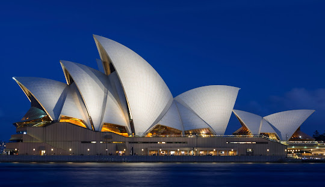

A Sydney Opera House é um ícone arquitetônico e cultural da Austrália, localizada na cidade de Sydney. Projetada por Jørn Utzon, é famosa por seu design único inspirado em velas ao vento e abriga apresentações de música, teatro e dança. Reconhecida como Patrimônio Mundial pela UNESCO, simboliza a criatividade e modernidade australianas.
A Grande Barreira de Coral, localizada na costa nordeste da Austrália, é o maior sistema de recifes de coral do mundo. Patrimônio Mundial da UNESCO, abriga uma biodiversidade marinha impressionante, com milhares de espécies de corais, peixes e outros organismos. É um dos maiores tesouros naturais do planeta e símbolo de preservação ambiental.
O Outback australiano é uma vasta região árida e remota que cobre grande parte do interior do país. Conhecido por suas paisagens impressionantes, como desertos, formações rochosas e planícies infinitas, é lar de rica biodiversidade e tradições aborígenes. O Outback simboliza a essência selvagem e intocada da Austrália.